REGOLE PER INDOSSARE L'EQUIPAGGIAMENTO
Le seguenti regole sono utilizzate per permettere ai personaggi di indossare i loro equipaggiamenti. Ogni personaggio dispone di alcune locazioni nelle quali indossare il proprio equipaggiamento. Ogni locazione dispone di un ammontare determinato di posizioni (slot) ed utilizza particolari regole per la loro occupazione. Quando è specificata la presenza di uno slot unico, in quella posizione potrà essere inserito un solo oggetto del tipo specifico indicato nella descrizione della posizione.
LOCAZIONE
TESTA (2 posizioni)
1 SLOT UNICO disponibile per indossare un ELMO od un CAPPELLO
1 SLOT UNICO disponibile per indossare un CAPPUCCIO
LOCAZIONE COLLO (3 posizioni)
3 SLOT disponibili per indossare collane o collari (con eventuali amuleti,
medaglioni, ciondoli)
Regole specifiche di riempimento
- una collana occupa 1 slot (con o senza ciondolo).
- un collare occupa 2 slot (con o senza ciondolo).
LOCAZIONE
SPALLE (4 posizioni + 1 slot unico)
1
SLOT UNICO disponibile per indossare un MANTELLO
4 SLOT disponibili per indossare armi od oggetti per questa locazione
Regole specifiche di riempimento
- un'arma di dimensioni large occupa 2 slot
- uno scudo medio occupa 1 slot
- uno scudo da corpo occupa 2 slot
- un'arma di dimensioni medium occupa 1 slot
-
non
possono essere posizionate armi di dimensioni small
LOCAZIONE
BUSTO (3 posizioni)
1 SLOT UNICO disponibile per indossare VESTITI
1 SLOT UNICO disponibile per indossare una CORAZZA
1 SLOT UNICO disponibile per indossare le PROTEZIONI
LOCAZIONE ADDOME (2 posizioni)
1 SLOT UNICO disponibile per indossare una CINTURA
1 SLOT UNICO disponibile per indossare le PROTEZIONI
LOCAZIONE
CINTURA (6 posizioni)
6 SLOT per indossare armi od oggetti per questa locazione
Regole specifiche di riempimento
- un'arma bastard sword occupa 3 slot
- un'arma di dimensioni medium occupa 2,5 slot
- un'arma di dimensioni small occupa 1 slot
- uno scudo piccolo occupa 1 slot
-
non
possono essere posizionate armi di dimensioni large, scudi medi e da corpo
-
solo le creature di taglia large possono posizionare armi large alla cintura
facendo occupare 3 slot
LOCAZIONE BRACCIO (2 posizioni)
1 SLOT UNICO disponibile per indossare un BRACCIALE
1 SLOT UNICO disponibile per indossare le PROTEZIONI
LOCAZIONE
MANI (2 posizioni)
1 SLOT disponibile per indossare ANELLI
1 SLOT UNICO disponibile per indossare GUANTI
LOCAZIONE GAMBA (1 posizione)
1 SLOT UNICO disponibile per indossare le PROTEZIONI
LOCAZIONE
PIEDI (1 posizione)
1 SLOT UNICO disponibile per indossare le SCARPE O STIVALI
CONTENITORI
Come regola generale è possibile raccogliere un oggetto presente in un
contenitore situato alla
cintura
senza impiegare un'apposita azione complessa (tale azione si considera infatti
una particolare free action). Se, però, nel contenitore sono
presenti più di tre diverse tipologie di oggetti, per ogni tipologia ulteriore
alla terza contenuta il personaggio riceverà una
penalità di +1 al fattore
iniziativa
dell'azione che si desidera compiere prendendo uno qualsiasi degli oggetti
presenti nel contenitore; fino ad una penalità massima di +6 (se vi sono 10 o
più tipologie di oggetti nel contenitore, infatti, prendere l'oggetto richiederà
una comune azione
complessa).
Si noti, però, che qualora l'azione che il personaggio deve effettuare
utilizzando l'oggetto che deve raccogliere richiede un intero round costui avrà
una possibilità pari al 10% per ogni penalità al fattore iniziativa superiore a
+1 di non aver abbastanza tempo restante nel round per effettuare l'azione dopo
aver recuperato l'oggetto. Quando ciò si verifica si consideri che il
personaggio abbia impiegato un'azione complessa per raccogliere l'oggetto senza
aver nemmeno potuto iniziare l'azione dalla durata di un round che desiderava
compiere. Se, ad esempio, una tasca contiene sei diversi oggetti che impongono
una penalità totale di +3 al fattore iniziativa per raccogliere uno qualsiasi
degli stessi, il personaggio che intende recuperare un oggetto per utilizzarlo
in un'azione dalla durata di un round ha il 20% di possibilità che l'azione di
recupero dell'oggetto sia considerata un'azione complessa.
| TIPOLOGIA | PESO | COSTO | PORTATA | LOCAZIONE | NOTE |
| ZAINO IN CANAPA PICCOLO [C] | 1 LIBBRA | 1 CORONA | 20 LIBBRE | SPALLE - 1 SLOT |
50% infiltrazioni, tiro salvezza stoffa |
| ZAINO IN CANAPA COMUNE [C] | 1,5 LIBBRE | 1,5 CORONE | 40 LIBBRE | SPALLE - 2 SLOT |
50% infiltrazioni, tiro salvezza stoffa |
| ZAINO IN CANAPA GRANDE [C] | 2 LIBBRE | 3 CORONE | 60 LIBBRE | SPALLE - 3 SLOT |
50% infiltrazioni, tiro salvezza stoffa |
| ZAINO STOFFA E LEGNO PICCOLO [C] | 3 LIBBRE | 3 CORONE | 25 LIBBRE | SPALLE - 1 SLOT |
33% infiltrazioni, tiro salvezza legno, rigido |
| ZAINO STOFFA E LEGNO COMUNE [C] | 4 LIBBRE | 4 CORONE | 40 LIBBRE | SPALLE - 2 SLOT |
33% infiltrazioni, tiro salvezza legno, rigido |
| ZAINO IN CUOIO PICCOLO [C] | 1,5 LIBBRE | 1,5 CORONE | 30 LIBBRE | SPALLE - 1 SLOT |
33% infiltrazioni, tiro salvezza cuoio |
| ZAINO IN CUOIO COMUNE [C] | 2 LIBBRE | 2 CORONE | 50 LIBBRE | SPALLE - 2 SLOT |
33% infiltrazioni, tiro salvezza cuoio |
| ZAINO IN CUOIO GRANDE [C] | 3 LIBBRE | 5 CORONE | 70 LIBBRE | SPALLE - 3 SLOT |
33% infiltrazioni, tiro salvezza cuoio |
| ZAINO IN CUOIO PICCOLO ECCELLENTE [U] | 1,5 LIBBRE | 5 CORONE | 30 LIBBRE | SPALLE - 1 SLOT |
15% infiltrazioni, tiro salvezza cuoio con bonus +1 |
| ZAINO IN CUOIO COMUNE ECCELLENTE [U] | 2 LIBBRE | 6 CORONE | 50 LIBBRE | SPALLE - 2 SLOT |
15% infiltrazioni, tiro salvezza cuoio con bonus +1 |
| ZAINO IN CUOIO GRANDE ECCELLENTE [U] | 3 LIBBRE | 12 CORONE | 70 LIBBRE | SPALLE - 3 SLOT |
15% infiltrazioni, tiro salvezza cuoio con bonus +1 |
| BORSA IN CUOIO A TRACOLLA [C] | 2 LIBBRE | 2,5 CORONE | 40 LIBBRE | SPALLE - 1 SLOT |
33% infiltrazioni, tiro salvezza cuoio -1 Thac0 impaccio* |
| BORSA IN CUOIO A TRACOLLA GRANDE [U] | 3 LIBBRE | 4 CORONE | 50 LIBBRE | SPALLE - 1 SLOT |
33% infiltrazioni, tiro salvezza cuoio -1 Thac0 impaccio* |
| TASCA DA CINTURA CANAPA PICCOLA [C] | 0,1 LIBBRE | 0,3 CORONE | 3 LIBBRE | CINTURA - 1 SLOT |
50% infiltrazioni, tiro salvezza stoffa |
| TASCA DA CINTURA CANAPA GRANDE [C] | 0,5 LIBBRA | 0,5 CORONE | 7 LIBBRE | CINTURA - 2 SLOT | 50% infiltrazioni, tiro salvezza stoffa |
| TASCA DA CINTURA CUOIO PICCOLA [C] | 0,5 LIBBRE | 0,7 CORONE | 4 LIBBRE | CINTURA - 1 SLOT |
25% infiltrazioni, tiro salvezza cuoio |
| TASCA DA CINTURA CUOIO GRANDE [C] | 1 LIBBRA | 1 CORONA | 9 LIBBRE | CINTURA - 2 SLOT | 25% infiltrazioni, tiro salvezza cuoio |
| SACCO DI CANAPA PICCOLO [C] | 0,1 LIBBRE | 0,05 CORONE | 10 LIBBRE | NONE |
50% infiltrazioni, tiro salvezza stoffa |
| SACCO DI CANAPA GRANDE [C] | 0,5 LIBBRA | 0,1 CORONE | 30 LIBBRE | NONE |
50% infiltrazioni, tiro salvezza stoffa |
| SACCO DI CANAPA CERATA PICCOLO [U] | 0,5 LIBBRA | 1 CORONA | 15 LIBBRE | NONE | 25% infiltrazioni, tiro salvezza stoffa con bonus +1 |
| SACCO DI CANAPA CERATA GRANDE [U] | 1 LIBBRA | 3 CORONE | 35 LIBBRE | NONE | 25% infiltrazioni, tiro salvezza stoffa con bonus +1 |
* Borsa a tracolla: questa borsa comporta una penalità di -1 alla thac0 per l'impaccio causato ai movimenti durante il combattimento. Inoltre, nonostante occupi un unico slot alle spalle, non è possibile indossare più di uno di questi contenitori. Nonostante, però, questo contenitore si indossi alle spalle, essendo facilmente accessibile, è possibile raccogliere oggetti dal suo interno senza impiegare un intero round ma ottenendo, unicamente, una penalità di +2 al fattore iniziativa dell'azione che si desidera compiere con quell'oggetto (oltre al modificatore applicabile per la presenza di più di tre tipologie diverse di oggetti al suo interno, fermo restando il limite massimo di +6 al fattore iniziativa che si otterrà con un ammontare di sette diversi oggetti). Sarà applicata inoltre la regola su menzionata concernente la possibilità di non riuscire a compiere un'azione che richiede un intero round prelevando un oggetto da una borsa che impone una penalità superiore a +1 al fattore iniziativa (in pratica, anche con un numero inferiore a quattro diversi oggetti, il personaggio avrà comunque il 10% di possibilità di impiegare un'azione complessa per raccogliere un oggetto da questa borsa).
CONTENITORI PER LIQUIDI
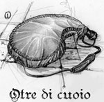
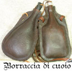
| TIPOLOGIA | PESO | COSTO | NOTE |
| BORRACCIA DI CUOIO PICCOLA (1 litro) [C] | 0,5 LIBBRE | 1 CORONE |
La borraccia piccola può contenere fino ad 1 litro di liquido (+ 2 libbre di peso). |
| BORRACCIA DI CUOIO GRANDE (2 litri) [C] | 1 LIBBRA | 1,5 CORONE |
La borraccia grande può contenere fino a 2 litri di liquido (+ 4 libbre di peso). |
| OTRE DI CUOIO (3 litri) [C] | 1,5 LIBBRE | 3 CORONE |
L'otre può contenere fino a 3 litri di liquido (+ 6 libbre di peso). |
| OTRE DI CUOIO GRANDE (5 litri) [C] | 2 LIBBRE | 5 CORONE |
L'otre grande può contenere fino a 5 litri di liquido (+ 10 libbre di peso). |
| GHERBA (15 litri) [U] | 4 LIBBRE | 25 CORONE |
La gherba può contenere fino a 15 litri di liquido (+ 30 libbre di peso). |
| BARILOTTO DI LEGNO (10 litri) [C] | 10 LIBBRE | 7 CORONE |
Il barilotto può contenere fino a 10 litri di liquido (+ 20 libbre di peso). |
| BARILOTTO DI LEGNO (20 litri) [C] | 15 LIBBRE | 10 CORONE |
Il barilotto può contenere fino a 20 litri di liquido (+ 40 libbre di peso). |
| BARILOTTO DI LEGNO (30 litri) [C] | 20 LIBBRE | 15 CORONE |
Il barilotto può contenere fino a 30 litri di liquido (+ 60 libbre di peso). |
| BARILOTTO DI LEGNO (40 litri) [C] | 25 LIBBRE | 20 CORONE |
Il barilotto può contenere fino a 40 litri di liquido (+ 80 libbre di peso). |
| BARILOTTO DI LEGNO (50 litri) [C] | 30 LIBBRE | 30 CORONE |
Il barilotto può contenere fino a 50 litri di liquido (+ 100 libbre di peso). |
* Gherba: E' un otre ricavato dalla lavorazione di una pelle di capra. La traspirazione della pelle permettono la conservazione dell'acqua ad una temperatura sempre bevibile, per questo motivo è un contenitore indispensabile nelle aree torride o desertiche. La gherba è costruita direttamente dal pastore nomade con un metodo molto antico ma efficace: dopo che l'animale (capra) è stato scuoiato, la pelle è preparata con un lungo e complicato trattamento (circa 40 giorni) a base di sale, olio e foglie d'olivo, scorza di melograno(tannino) ed altri elementi d'origine naturale. La gherba viene poi ripetutamente lavata internamente con acqua e levigata con l'aiuto della sabbia. Tutte le aperture naturali (apertura degli arti, apertura anale, apertura vaginale) sono chiuse con robusta corda eccetto quella del collo, che si userà quale imboccatura del recipiente. L'acqua conservata nella gherba prende una colorazione giallognola e un sapore lievemente acido a causa dell'elevato contenuto di tannino contenuto nelle bucce di melograno con cui è stata trattata, ma nel complesso la gherba rimane tuttora è il contenitore più valido per la conservazione dell'acqua negli ambienti desertici. Comunemente la Gherba, per le sue dimensioni, non entra negli altri contenitori e deve essere attaccata lateralmente ad una cavalcatura come se si trattasse di una bisaccia.
CONTENITORI PER PERGAMENE
Come regola generale per prendere una pergamena custodita in un porta pergamene che si trovi a portata di mano occorre un'azione complessa consistente nell'aprire il contenitore, estrarre la pergamena e richiudere il contenitore. Parimenti sarà considerata un'azione complessa posare una pergamena all'interno di un porta pergamene che si ha a portata di mano.
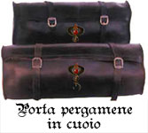
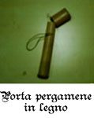
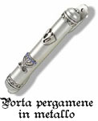
| TIPOLOGIA | CAPIENZA | PESO | COSTO | NOTE |
| PORTA PERGAMENE DI CUOIO PICCOLO [U] | 5 SCROLL | 0,5 LIBBRE | 2,5 CORONE |
20% infiltrazioni, tiro salvezza cuoio |
| PORTA PERGAMENE DI CUOIO GRANDE [U] | 10 SCROLL | 1,5 LIBBRE | 5 CORONE |
20% infiltrazioni, tiro salvezza cuoio |
| PORTA PERGAMENE DI LEGNO [U] | 5 SCROLL | 1 LIBBRA | 3 CORONE |
10% infiltrazioni, tiro salvezza legno |
| PORTA PERGAMENE DI METALLO [R] | 5 SCROLL | 2 LIBBRE | 10 CORONE |
10% infiltrazioni, tiro salvezza metallo |
 |
LIVELLI DI ILLUMINAZIONE
Scarsa Luminosità Penombra
Minima Luminosità
Oscurità
Buio Assoluto |
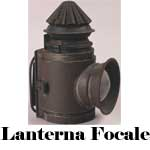
| TIPOLOGIA | PESO | COSTO | NOTE |
| CANDELA [C] | 0,1 LIBBRE | 0,05 CORONA |
Luce 3 metri (+1 metro per candela supp. max. 6 metri), si consuma in sei ore |
| CANDELABRO A QUATTRO BRACCI DI BRONZO [C] | 3 LIBBRE | 10 CORONE |
Luce da 3 a 6 metri (da 1 a 4 candele), fiamma scoperta |
| CERO [C] | 1 LIBBRA | 1 CORONA |
Luce 3 metri (+1 metro per cero supp. max. 6 metri), si consuma in due giorni |
| FIASCHETTA IN RAME CON OLIO [C] | 1 LIBBRA | 0,05 CORONE |
Contiene 1/2 litro di olio per lanterna |
| GANCIO PER TORCIA A PARETE [C] | 0,5 LIBBRE | 0,2 CORONE |
Nessuna |
| LANTERNA AD OLIO FISSA SCOPERTA [C] | 1 LIBBRA | 2 CORONE |
Luce 9 metri, fiamma scoperta, necessita appoggio fisso, consuma 1/2 litro di olio * 24 ore. |
| LANTERNA AD OLIO FISSA COPERTA [U] | 1,5 LIBBRE | 5 CORONE |
Luce 9 metri, fiamma coperta, necessita appoggio fisso, consuma 1/2 litro di olio * 24 ore. |
| LANTERNA AD OLIO PORTATILE [U] | 2 LIBBRE | 8 CORONE |
Luce 9 metri, fiamma coperta, dotata di manico e gancio, consuma 1/2 litro di olio * 24 ore. |
| LANTERNA AD OLIO FOCALE [R] | 3 LIBBRE | 15 CORONE |
Luce 12 metri solo pos. frontali, fiamma coperta, dotata di manico, consuma 1/2 litro di olio * 24 ore. |
| OLIO PER LANTERNA SFUSO (al litro) [C] | 2 LIBBRE | 0,06 CORONE |
Nessuna |
| PORTA CANDELA SCOPERTO [C] | 0,5 LIBBRE | 0,3 CORONE |
Nessuna |
| PORTA CANDELA COPERTO [U] | 1 LIBBRA | 3,5 CORONE |
Nessuna |
| TORCIA [C] | 1 LIBBRA | 0,1 CORONE |
Luce 6 metri, si consuma in un'ora, utilizzo in combattimento* |
* Torcia: la torcia può essere utilizzata in combattimento. Non essendo possibile utilizzarla come arma efficiente i personaggi che saranno considerati non aventi alcuna abilità nell'uso della stessa con conseguente applicazione della penalità prevista per ogni singola classe di personaggio. I personaggi che posseggono la competenza Weapon Improvisation (1 slot, gruppo di classe: Combattenti), invece, saranno automaticamente considerati abili nell'uso della torcia come arma da combattimento. Un animale comune, non addestrato alla lotta od in altro modo comandato, che voglia attaccare chi impugna la torcia deve superare prima di attaccare un tiro salvezza su coraggio; se il tiro salvezza fallisce l'animale perderà l'azione complessa di attacco. Ad ogni colpo inflitto con la torcia, che sia andato a segno, la stessa dovrà superare un tiro salvezza contro rottura pari a 6 per non spezzarsi e spegnersi alla fine del round. Le statistiche della torcia sono le seguenti:
|
TIPO DI ARMA |
FORZA | COSTITUZIONE | DESTREZZA |
| TORCIA (none) | 8 | 8 | 12 |
|
TIPO DI ARMA |
SIZE (PESO) | DANNO | INIZIATIVA |
| TORCIA | Small (1 libbra) | 1d4 (danno da fuoco comune) | +5 |
|
TIPO DI ARMA |
COSTO | PARATA | MATERIALE |
| TORCIA | 0,1 corone | 0 | Legno |
Danneggiare una fonte di luce
Se, per qualsiasi motivo, una fonte di luce cade al suolo o subisce un impatto, vi è una certa possibilità che la stessa si rompa e che la luce si spenga. In caso di caduta se la fonte di luce è recuperata prima dello spegnimento lo stesso non si verificherà. Si consulti quindi la seguente tabella:
| TIPOLOGIA | TIRO SALVEZZA ROTTURA | MODALITA' DI SPEGNIMENTO |
| CANDELA | Tiro salvezza 15 |
Spegnimento automatico ed immediato |
| CANDELABRO A QUATTRO BRACCI DI BRONZO | Tiro salvezza 8 |
Spegnimento automatico ed immediato |
| CERO | Tiro salvezza 13 |
Spegnimento automatico ed immediato |
| LANTERNA AD OLIO FISSA SCOPERTA | Tiro salvezza 12 |
La lanterna si spegnerà alla fine del round |
| LANTERNA AD OLIO FISSA COPERTA | Tiro salvezza 12 |
La torcia si spegnerà trascorsi 1d2round (a partire da quello della caduta o della rottura) |
| LANTERNA AD OLIO PORTATILE | Tiro salvezza 12 |
La torcia si spegnerà trascorsi 1d3 round (a partire da quello della caduta o della rottura) |
| LANTERNA AD OLIO FOCALE | Tiro salvezza 15 |
La torcia si spegnerà trascorsi 1d3 round (a partire da quello della caduta o della rottura) |
| PORTA CANDELA SCOPERTO | Tiro salvezza 14 |
Spegnimento automatico ed immediato |
| PORTA CANDELA COPERTO | Tiro salvezza 14 |
Spegnimento automatico ed immediato |
| TORCIA | Tiro salvezza 6 |
La torcia si spegnerà trascorsi 1d3 round (a partire da quello della caduta o della rottura) |
ATTREZZI GENERICI
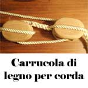
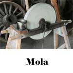
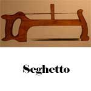
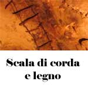
| TIPOLOGIA | PESO | COSTO | NOTE |
| CARRUCOLA DI LEGNO PER CORDA [U] | 6 LIBBRE | 5 CORONE |
Necessita di essere fissata ad un supporto fisso, usa 5 m. di corda, dimezza fino a 1000 lb. di peso |
| CHIODO DI FERRO [C] | 0,2 LIBBRE | 0,1 CORONE |
Nessuna |
| CORDA DI CANAPA (al metro) [C] | 1,25 LIBBRE | 0,1 CORONE |
Carico rottura 250 libbre, per round sottoposta > peso TS 5 +1 ogni 50 lb. o si spezza |
| CORDA DI SETA SILVERIANA (al metro) [U] | 0,5 LIBBRE | 0,75 CORONE |
Carico rottura 300 libbre, per round sottoposta > peso TS 5 +1 ogni 50 lb. o si spezza |
| CORDA DI SETA ELFICA (al metro) [R] | 0,33 LIBBRE | 2,5 CORONE |
Carico rottura 300 libbre, per round sottoposta > peso TS 4 +1 ogni 50 lb. o si spezza |
| FORBICI [C] | 0,5 LIBBRE | 1 CORONA |
Nessuna |
| MOLA [C] | 50 LIBBRE | 5 CORONE |
Nessuna |
| PIEDE DI PORCO DI FERRO (lungo 1 metro) [C] | 4 LIBBRE | 3 CORONE |
Conferisce un bonus di +1 ai tentativi di "open door" basati sulla forza |
| SCALA A PIOLI DI LEGNO (3 metri) [C] | 25 LIBBRE | 1,5 CORONE |
Carico rottura 500 libbre (TS corda canapa), ogni 3 metri richiede il triplo del fattore movimento |
| SCALA A PIOLI DI LEGNO (6 metri) [C] | 50 LIBBRE | 4 CORONE |
Carico rottura 500 libbre (TS corda canapa), ogni 3 metri richiede il triplo del fattore movimento |
| SCALA A PIOLI DI LEGNO (9 metri) [C] | 75 LIBBRE | 7 CORONE |
Carico rottura 500 libbre (TS corda canapa), ogni 3 metri richiede il triplo del fattore movimento |
| SCALA DI CORDA E LEGNO (ogni 9 metri) [U] | 12 LIBBRE | 3 CORONE |
Carico rottura 300 libbre (TS corda canapa), ogni 3 metri richiede il quadruplo del movimento. |
| SEGHETTO [C] | 2 LIBBRE | 2,5 CORONE |
Nessuna |
Come regola generale è possibile utilizzare gli arnesi da lavoro come armi. Non essendo possibile utilizzare tali strumenti come armi efficienti i personaggi che li utilizzano saranno considerati non aventi alcuna abilità nell'uso degli stessi con conseguente applicazione della penalità prevista per ogni singola classe di personaggio. I personaggi che posseggono la competenza Weapon Improvisation (1 slot, gruppo di classe: Combattenti), invece, saranno automaticamente considerati abili nell'uso come arma di qualsiasi arnese da lavoro.
| TIPOLOGIA | PESO / SIZE | COSTO | FOR | COS | DES | DMG | INIZ | PAR | MAT | NOTE |
| COLTELLO DA CUCINA PICCOLO [C] | 1 lbs./Small | 0,5 CORONE | 7 | 7 | 9 | 1d2 | +2 | 0 | Metallo | Danno da punta |
| COLTELLACCIO DA CUCINA [C] | 2 lbs./Small | 1,5 CORONE | 8 | 7 | 10 | 1d3 | +3 | 0 | Metallo | Danno da taglio |
| MANNAIA DA CUCINA [C] | 3 lbs./Small | 4 CORONE | 9 | 9 | 9 | 1d4 | +4 | 1 | Metallo | Danno da taglio |
| MARTELLO DI METALLO [U] | 4 lbs./Small | 3 CORONE | 10 | 9 | 8 | 1d3 | +5 | 0 | Metallo | Danno da botta |
| MARTELLO DI PIETRA [C] | 10 lbs./Medium | 4 CORONE | 12 | 13 | 7 | 1d6 | +8 | 0 | Metallo | A due mani, danno da botta |
| PALA [C] | 5 lbs./Medium | 3 CORONE | 10 | 11 | 9 | 1d3+1 | +6 | 2 | Legno | A due mani, danno da botta |
| PICCONE [C] | 7 lbs./Medium | 3,5 CORONE | 12 | 12 | 8 | 1d4+1 | +7 | 1 | Legno | A due mani, danno da punta |
| RASOIO [C] | 0,2 lbs./Small | 2,5 CORONE | 7 | 7 | 13 | 1d3+1 | +2 | 0 | Metallo | Danno da taglio |
ATTREZZI DA SCALATA
La seguente lista
di equipaggiamento è specificamente concepita per essere utilizzata per scalare
le pareti (link).
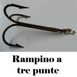
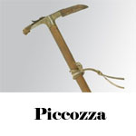
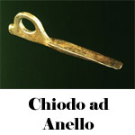
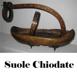
| TIPOLOGIA | PESO | COSTO |
| CHIODO DI FERRO AD ANELLO [U] | 0,5 LIBBRE | 0,5 CORONA |
| GUANTI E STIVALI DA SCALATORE [C] | 2 LIBBRE | 4 CORONE |
| IMBRACATURA PER RAPPELLING [R] | 2,5 LIBBRE | 35 CORONE |
| GUANTI CHIODATI [U] | 1 LIBBRA | 3 CORONE |
| SUOLE CHIODATE [U] | 3 LIBBRE | 7 CORONE |
| PICCOZZA [U] | 3 LIBBRE | 3 CORONE |
| RAMPINO A DUE PUNTE [U] | 3 LIBBRE | 6 CORONE |
| RAMPINO A TRE PUNTE [C] | 4 LIBBRE | 8 CORONE |
| RAMPINO A QUATTRO PUNTE [U] | 5 LIBBRE | 10 CORONE |
Come regola generale è possibile utilizzare i seguenti attrezzi da scalata come armi. Non essendo possibile utilizzare tali strumenti come armi efficienti i personaggi che li utilizzano saranno considerati non aventi alcuna abilità nell'uso degli stessi con conseguente applicazione della penalità prevista per ogni singola classe di personaggio. I personaggi che posseggono la competenza Weapon Improvisation (1 slot, gruppo di classe: Combattenti), invece, saranno automaticamente considerati abili nell'uso come arma di qualsiasi arnese da lavoro.
| TIPOLOGIA | SIZE | FOR | COS | DES | DMG | INIZ | PAR | MAT | NOTE |
| GUANTI CHIODATI [U] | Small | 7 | 7 | 8 | 1d2 | +3 | 0 | Metallo | Danno da punta |
| PICCOZZA [U] | Small | 8 | 7 | 10 | 1d3 | +2 | 0 | Metallo | Danno da punta |
| RAMPINO A DUE PUNTE [U] | Small | 9 | 8 | 10 | 1d2 | +4 | 0 | Metallo | Danno da punta |
| RAMPINO A TRE PUNTE [C] | Small | 10 | 8 | 10 | 1d3 | +4 | 0 | Metallo | Danno da punta |
| RAMPINO A QUATTRO PUNTE [U] | Medium | 11 | 9 | 10 | 1d4 | +5 | 0 | Metallo | Danno da punta |
ATTREZZATURA PER LE CAVALCATURE
La seguente lista di equipaggiamento è specificamente concepita per essere montata su una cavalcatura. I costi e le dimensioni si riferiscono all'equipaggiamento di una cavalcatura standard, ossia di un cavallo, un mulo od un asino.
Imbracatura per cavalcatura
[7
CORONE,
4 LIBBRE]:
L'imbracatura comprende il morso, le briglie ed i ferri di cavallo.
Sella
da viaggio
[15
CORONE,
12 LIBBRE]:
La sella da viaggio è ideata appositamente per cavalcare comprende la seduta, il
pomello e le staffe. Si noti che
cavalcare una qualsiasi
cavalcatura senza la sella impone una penalità di -3 a tutte le prove
di cavalcare ed a tutte le connesse prove di abilità. Una sella da viaggio
permette il posizionamento di
due bisacce
laterali (siano esse piccole o grandi).
Sella da carico
[6
CORONE,
5 LIBBRE]:
La sella da carico non permette l'alloggiamento del cavaliere ma permette il
posizionamento di
quattro bisacce
laterali nonché l'alloggiamento di un contenitore supplementare (baule o barile)
legato con le cinghie sulla parte superiore. La sella da carico, inoltre,
presenta un grosso anello di metallo posteriore utile per un eventuale traino.
Bisacce: Le bisacce rappresentano il contenitore standard da apporre ai lati di una sella. Esistono le seguenti tipologie di bisacce:
| TIPOLOGIA | PESO | COSTO | PORTATA | LOCAZIONE | NOTE |
| BISACCIA IN CANAPA PICCOLA [C] | 0,5 LIBBRA | 1,5 CORONA | 10 LIBBRE | SELLA |
50% infiltrazioni, tiro salvezza stoffa |
| BISACCIA IN CANAPA GRANDE [C] | 1 LIBBRA | 2,5 CORONE | 20 LIBBRE | SELLA |
50% infiltrazioni, tiro salvezza stoffa |
| BISACCIA IN CUOIO PICCOLA [C] | 1 LIBBRA | 2,5 CORONE | 15 LIBBRE | SELLA |
33% infiltrazioni, tiro salvezza cuoio |
| BISACCIA IN CUOIO GRANDE [C] | 2 LIBBRE | 4 CORONE | 25 LIBBRE | SELLA |
33% infiltrazioni, tiro salvezza cuoio |
| BISACCIA IN CUOIO PICCOLA ECCELLENTE [U] | 1,5 LIBBRE | 5 CORONE | 18 LIBBRE | SELLA |
15% infiltrazioni, tiro salvezza cuoio con bonus +1 |
| BISACCIA IN CUOIO GRANDE ECCELLENTE [U] | 2,5 LIBBRE | 8 CORONE | 30 LIBBRE | SELLA |
15% infiltrazioni, tiro salvezza cuoio con bonus +1 |
ANIMALI ADDESTRATI E CAVALCATURE
| TIPOLOGIA | COSTO |
| MULO [C] (link) | 40 CORONE [15 CORONE Animale + 25 CORONE Addestramento cavalcare/carico] |
| CANE DA GUERRA ADDESTRATO [C] (link) | 50 CORONE |
Configurazione
per un comune mulo da carico:
Mulo addestrato,
40 corone
Imbracatura per cavalcatura, 7
corone (4
libbre)
Sella da carico, 6 corone,
(5 libbre)
Bisacce in cuoio grandi * 4, 4
corone (2
libbre, portata 25 libbre)
Barile da 50 litri sulle cinghie,
30 corone
(30 libbre,
portata 100 libbre/50 litri).
COSTO TOTALE:
98 corone
PESO TRASPORTATO:
47 libbre
(246 libbre con contenitori carichi)
CIBO E RAZIONI DA VIAGGIO
Cibo fresco: si tratta di cibo che necessita di una cucina (o di strumenti alternativi) per essere cucinato e presuppone un costante rifornimento. Essendo fresco questo cibo è conservabile in condizioni normali per massimo 5 giorni. Il costo del cibo fresco è in corone al giorno. Il peso di questo cibo è pari ad 1 libbra per razione giornaliera. Il costo ed il peso sono calcolati valutando una razione giornaliera per una creatura di taglia medium.
| TIPOLOGIA | PESO | COSTO | NOTE |
| RAZIONE PER ANIMALE DOMESTICO [C] | 1 LIBBRA | 0,02 CORONA |
Si tratta di razioni a basso contenuto proteico utili per animali non combattenti |
| RAZIONE PER ANIMALE DA GUERRA [C] | 1 LIBBRA | 0,1 CORONA |
Si tratta di razioni con alto contenuto proteico (carne e pesce) |
| CIBO DI QUALITÀ SCADENTE [C] | 1 LIBBRA | 0,04 CORONE |
Cibo scadente a basso contenuto energetico, es. poveri brodi e zuppe vegetali. (Poveri, schiavi, soldati semplici) |
| CIBO DI QUALITÀ BASSA [C] | 1 LIBBRA | 0,1 CORONE |
Cibo semplice, es. brodi e zuppe di legumi, carni grasse. (Personaggi 1°-3° liv., piccoli artigiani, sotto ufficiali) |
| CIBO DI QUALITÀ MEDIA [C] | 1 LIBBRA | 0,2 CORONE |
Cibo semplice, es. brodi e zuppe di legumi, carni grasse. (Personaggi 4°-6° liv., borghesia, ufficiali) |
| CIBO DI QUALITÀ BUONA [U] | 1 LIBBRA | 0,5 CORONE |
Cibo saporito e nutriente, es. carne magra, pesce, farinacei. (Personaggi 7°-8° liv., ricchi, alti ufficiali) |
| CIBO DI QUALITÀ LUSSO [[R] | 1 LIBBRA | 1 CORONA |
Cibo raro e particolare, es. carne pregiata, vino raro. (Personaggi 9° liv.+ , nobili) |
Razioni secche: si tratta di razioni di cibo secco solitamente trasportato per lunghi viaggi. Le tecniche di conservazione principalmente utilizzate sono la salamoia, l'essiccamento e l'affumicamento. Nonostante non sia cibo di particolare gusto queste razioni possono durare fino ad tre mesi per razioni di bassa qualità e fino ad un anno per quelle di buona qualità. Il costo ed il peso sono calcolati valutando una razione giornaliera per una creatura di taglia medium.
| TIPOLOGIA | PESO | COSTO | NOTE |
| RAZIONE SECCHE DI BASSA QUALITÀ [C] | 0,5 LIBBRE | 0,25 CORONE |
Normalmente utilizzate per animali, da soldati comuni e personaggi di basso livello (1°-3° livello) |
| RAZIONE SECCHE DI BUONA QUALITÀ [U] | 0,5 LIBBRE | 0,5 CORONE |
Si tratta di razioni secche di vario genere che rappresentano un buon sostentamento. |
REGOLE PER LA MANCANZA DI CIBO OD ACQUA
Quando una creatura manca di cibo sufficiente a nutrirlo costei si indebolirà progressivamente fino a morire di inedia. Esistono quattro stadi di indebolimento per mancanza di cibo (le penalità di ogni stadio non sono cumulative):
- Nutrito/Idratato: Stadio di normale benessere non collegato ad alcuna penalità.
-
Affamato/Assetato:
Si entra in questo stadio automaticamente una volta trascorse 24 ore senza
nutrirsi in maniera sufficiente (ciò anche in caso di nutrimento parziale). Le
creature affamate subiscono una penalità di
-1 a tutte le prove di
forza e costituzione
ed acquisiscono
costantemente 3 punti fatica che non possono essere recuperati
fino a che non si nutriscono adeguatamente.
Ogni ulteriori 24 ore
trascorse in questa situazione senza mangiare la creatura dovrà superare un tiro
salvezza su robustezza con una penalità cumulativa del +5%
(+10% in caso di carenza
d'acqua) ad ogni
successivo tiro salvezza.
Non appena la creatura fallisce un tiro salvezza la stessa passerà
immediatamente allo stadio successivo. Se la creatura si nutre o beve in modo
insufficiente disponendo di razioni limitate pari a non meno della metà di
quelle che le sono normalmente richieste giornalmente la stessa riceverà un
bonus di +20% a tutti i tiri salvezza fino a che si nutre in tal modo.
Una volta entrati
in questo stadio se la creatura riceve cibo o bevande adeguate tornerà allo
stadio superiore trascorsa una giornata.
- Indebolito:
Il corpo della creatura perde vigore fisico e la stessa subisce le seguenti
penalità: - 3 a
tutte le prove di forza, destrezza e costituzione,
- 10% a tutti i
tiri salvezza su robustezza e su riflessi,
-1 ai tiri per
colpire e -1 ai danni
(penalità dovuta alla mancanza di forza),
10% di possibilità di
fallire nella concentrazione,
cumulo di 1 punto
fatica supplementare ad ogni occasione in cui ne avrebbero accumulato uno
ed acquisizione
costante di 4 punti fatica che non possono essere recuperati
fino a che non si nutriscono adeguatamente.
Ogni ulteriori 24 ore
trascorse in questa situazione senza mangiare la creatura dovrà superare un tiro
salvezza su robustezza con una penalità cumulativa del +10%
(+20% in caso di carenza
d'acqua) ad ogni
successivo tiro salvezza.
Non appena la creatura fallisce un tiro salvezza la stessa passerà
immediatamente allo stadio successivo. Se la creatura si nutre o beve in modo
insufficiente disponendo di razioni limitate pari a non meno della metà di
quelle che le sono normalmente richieste giornalmente la stessa riceverà un
bonus di +10% a tutti i tiri salvezza fino a che si nutre in tal modo.
Una volta entrati
in questo stadio se la creatura riceve cibo o bevande adeguate tornerà allo
stadio superiore trascorsa una giornata.
- Afflitto:
Il corpo della creatura è estremamente debilitato dalla carenza di cibo e la
creature rischia di morire di fame. e la stessa subisce le seguenti penalità:
- 5 a tutte le prove di
forza, destrezza e costituzione,
- 20% a tutti i
tiri salvezza su robustezza e su riflessi,
annullamento del
bonus di forza al tiro per colpire ed ai danni, -1 ai tiri per colpire e -1 ai
danni (penalità
dovuta alla mancanza di forza),
annullamento del bonus di
destrezza alla classe armatura, 20% di possibilità di fallire nella
concentrazione,
cumulo di 2 punti
fatica supplementari ad ogni occasione in cui ne avrebbero accumulato uno
ed acquisizione
costante di 5 punti fatica che non possono essere recuperati
fino a che non si nutriscono adeguatamente.
Ogni ulteriori 24 ore
trascorse in questa situazione senza mangiare la creatura dovrà superare un tiro
salvezza su robustezza con una penalità cumulativa del +15%
(+30% in caso di carenza
d'acqua) ad ogni
successivo tiro salvezza.
Non appena la creatura fallisce un tiro salvezza la stessa passerà
immediatamente allo stadio successivo. Se la creatura si nutre in modo
insufficiente disponendo di razioni limitate pari a non meno della metà di
quelle che le sono normalmente richieste giornalmente la stessa riceverà un
bonus di +5% a tutti i tiri salvezza fino a che si nutre in tal modo.
Una volta entrati
in questo stadio se la creatura riceve cibo o bevande adeguate tornerà allo
stadio superiore trascorse 1d2 giornate.
- Morte di fame o
di sete: La
creatura cade al suolo e non può compiere alcuna azione né spostamento potendo
parlare con un filo di voce ed effettuare movimenti piccolissimi, leggeri ed
oltremodo lenti. La creatura morirà di inedia una volta trascorsi 1d3 giorni
(24 ore in caso di carenza
d'acqua).
Una volta entrati
in questo stadio se la creatura riceve cibo o bevande adeguate tornerà allo
stadio superiore trascorse 1d2+1 giornate.
 |
Foraggiare è uno dei metodi più rudimentali di trovare cibo e consiste nel perlustrare l'ambiente in cui ci si trova alla ricerca di piante, bacche, radici, ed altri frutti eventualmente commestibili. Ogni creatura può, impiegando tre ore di ricerca, allontanarsi e cercare piante commestibili nella zona in cui si trova. Per determinare il risultato di tale attività si consulti la relativa tabella. Si noti che ogni creatura può effettuare una sola prova di foraggiare al giorno nella medesima zona e che creature che cerchino insieme avranno diritto ad un unico tiro. In ogni caso, anche in giorni differenti, non può essere effettuate nella medesima un ammontare complessivo di ricerche pari a sei.
Le due cifre
presenti corrispondono rispettivamente alla possibilità, in termini
percentuali, di ritrovare qualcosa che apparentemente è commestibile
(cifra a sinistra) ed alla possibilità che ciò che è stato ritrovato sia
in realtà tossico e nocivo per la salute di chi lo ingerisce (cifra a
destra). [2-4] La razione causa intossicazione alimentare. Chi la mangia non otterrà alcun beneficio ma per intossicazione subirà gli effetti del seguente veleno. Tipologia Ingestione, Onset 1d3 ore, Effetti Inabilitato per 24 ore/Impedito per 1d3 giorni, Delay None, Tiro Salvezza senza modificatori, Assuefazione Nessuna. [5-8] La razione non è di per sé dannosa ma non conferisce alcun valore nutritivo. La creatura che la ingerisce si sentirà solo apparentemente sazia per poi avere la medesima fame nel giro di un'ora. |
 |
In alcuni momenti trovare acqua può essere necessario per svariati motivi, primo tra questi sopravvivere. Oltre alle fonti ed ai depositi d'acqua in cui i personaggi possono naturalmente imbattersi camminando costoro possono espressamente dedicarsi alla ricerca di acqua nella zona in cui si trovano. Ogni creatura può, impiegando tre ore di ricerca, allontanarsi e cercare acqua nella zona in cui si trova. Per determinare il risultato di tale attività si consulti la relativa tabella. Si noti che ogni creatura può effettuare una sola prova al giorno nella medesima zona e che creature che cerchino insieme avranno diritto ad un unico tiro. In ogni caso, anche in giorni differenti, non può essere effettuate nella medesima un ammontare complessivo di ricerche pari a sei.
Le due cifre
presenti corrispondono rispettivamente alla possibilità, in termini
percentuali, di ritrovare un deposito d'acqua (cifra a sinistra) ed alla
possibilità che l'acqua ritrovata sia in realtà nociva per la salute di
chi la beve (cifra a destra). (1-4)
Acqua sporca bevibile solo da creature mostruose od animali. |
MACELLARE UNA CARCASSA
Si
consideri la seguente tabella per determinare l'ammontare di razioni che è
possibile ottenere da una carcassa di un animale abbattuto.
Animale di taglia
small: 1 razione (1d3
con una prova riuscita nella competenza butchery)
per una creatura di dimensioni medium.
Animale di taglia
medium: 3 razioni (2d4+1
con una prova riuscita nella competenza butchery)
per una creatura di dimensioni medium.
Animale di taglia
large: 6 razioni (4d4+2
con una prova riuscita nella competenza butchery)
per una creatura di dimensioni medium.
Si consideri, inoltre, che per macellare una carcassa sarà necessario un
ammontare di lavoro che dipende dalla dimensione della stessa: 30 minuti per una
creatura small,
1 ora per una creatura
medium
e 3 ore per una creatura
large.
CIBO DEPERITO, CIBO MARCIO E CIBO MALSANO
 |
Quando ci si procura cibo fresco, ossia di cibo non sottoposto ad alcuna tecnica di conservazione, lo stesso potrà conservarsi per periodi di tempo relativamente brevi. In particolare si utilizzi la seguente tabella per determinare quanto tempo il cibo può essere conservato. Si consideri che questa tabella vale per cibo conservato alla temperatura dell'ambiente esterno. Le due cifre presenti corrispondono rispettivamente il numero di giorni trascorsi i quali dovrà essere effettuata la prima prova di deperimento (cifra a sinistra) ed il secondo la possibilità, in termini percentuali, che il cibo si sia deperito (cifra a destra). Se il cibo non si deperisce dovrà ripetersi il tiro dopo ogni giornata con un aumento cumulativo delle possibilità pari al +10%. Al fallimento della prima prova il cibo diventerà deperito e dopo ogni successivo giorno dovrà continuare ad effettuare la medesima prova cumulando ancora i modificatori. Al fallimento della seconda prova diventerà cibo marcio.
Cibo
deperito:
Si tratta di cibo non fresco ma non ancora del tutto marcio.
Non è facile
rendersi conto di questo stadio di deperimento del cibo,
occorre superare a tal fine una
prova di osservare.
Chi si nutre di una qualsiasi quantità di cibo deperito deve superare un
tiro salvezza su robustezza. Se la prova riesce costui non subirà alcun
effetto negativo a causa dell'intossicazione. Se la prova fallisce si
sarà intossicato: Tipologia
Ingestione,
Onset
1d3 ore,
Effetti
Inabilitato per 24 ore/Impedito
per 24 ore,
Delay
None,
Tiro Salvezza
senza modificatori,
Assuefazione
Nessuna. Cibo marcio: Il cibo puzza ed è chiaramente andato a male. Chi si nutre di una qualsiasi quantità di cibo marcio subirà un'intossicazione: Tipologia Ingestione, Onset 1 turno, Effetti Impedito per 1d4 giorni/Impedito per 1d4 giorni e perdita di 2d6+3 punti ferita + un ammontare di punti ferita pari al 10% dei punti ferita massimi della creatura, Delay None, Tiro Salvezza senza modificatori, Assuefazione Nessuna. In ogni caso, indipendentemente dall'intossicazione il cibo marcio avrà comunque il 50% di possibilità di nutrire la creatura che lo ha ingerito (in caso negativo il cibo non sarà digerito e verrà prima o poi vomitato).
Cibo malsano:
Il cibo malsano è una qualità del cibo fresco che può concorrere con
quella del cibo deperito e/o marcio e che non ha a che fare con il suo
stadio di conservazione ma si riferisce alla qualità intrinseca dello
stesso ed all'igiene con cui è immagazzinato o cucinato. Si intende per
cibo malsano una qualità di cibo estremamente degradata, cibo mantenuto
in condizioni igieniche scarse, tipologia di cibo di qualità
particolarmente bassa (si pensi a carni di esseri mostruosi commestibili
ma non paragonabile alla carne animale). Gli animali, le creature
mostruose ed alcuni umanoidi possono ingerire questa tipologia di cibo
senza subire conseguenze. Chi non è dotato del relativo talento
razziale, come ad esempio tutti gli esseri umani ed i semi-umani, oltre
a trovare tale cibo disgustoso può anche subire conseguenze negative in
caso di ingerimento dello stesso. In questo caso si tiri
1d6
all'ingerimento di ogni razione e si consulti la seguente tabella: |